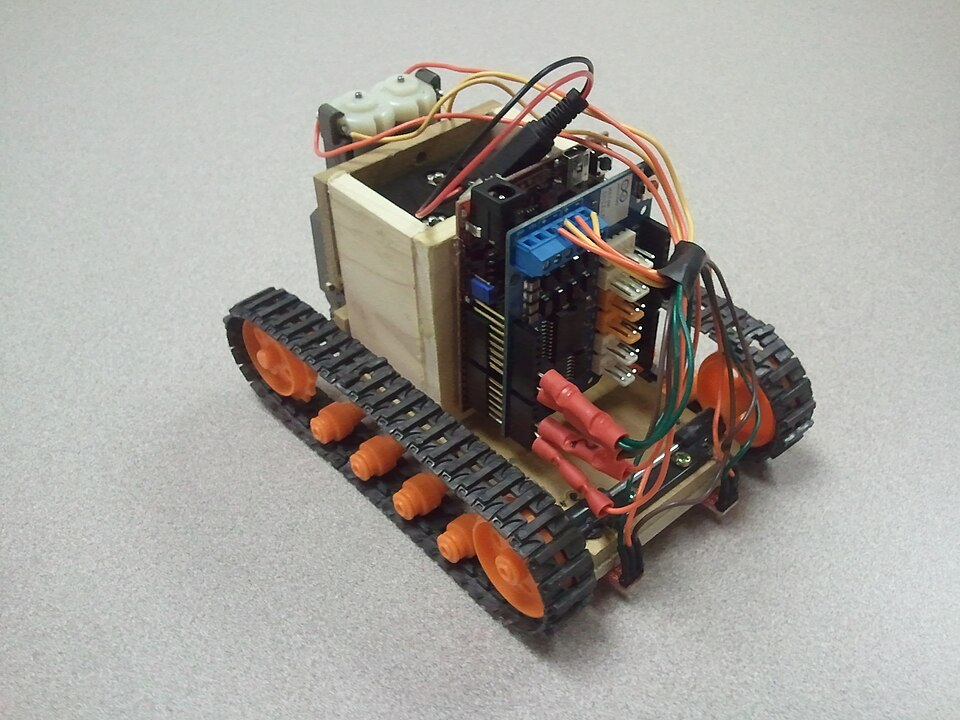

Build a two-sensor line-following robot
Use a motor driver and two reflectance sensors to steer a small robot. Test it with the wheels raised before tuning on a paper course.
Build and check the chassis

Photo by Marcmccomb, resized. Original photo · CC BY-SA 3.0.

Use a 5 V Arduino Uno, a TB6612FNG carrier, two 5 V-compatible analogue reflectance sensors such as Pololu QTR A-type units, two small geared motors, a chassis and a separately switched motor supply matched to the motors. A 4×AA pack can suit 6 V motors if the loaded and fresh pack voltages meet the selected hardware limits. Check each motor’s stall current at that voltage against the carrier’s continuous and peak limits and size the supply and protection for both motors. Use a securely mounted holder, a fuse suited to the wiring, and an accessible motor supply switch. Keep fingers and wires clear of gears. Pololu TB6612FNG carrier.
- Connect Uno 5 V to carrier VCC and sensor supply, and join Uno GND, sensor grounds and motor supply negative at the driver’s ground reference. Connect motor positive supply only to the carrier’s VMOT. Use a separate 5 V USB supply for the Uno. Follow the carrier’s decoupling instructions.
- Connect left and right sensor outputs to A0 and A1. Wire left motor to AO1/AO2 and right motor to BO1/BO2. Connect PWMA to D5, PWMB to D6 and STBY to D4. Connect AIN1 to D7, AIN2 to D8, BIN1 to D9 and BIN2 to D10. Add a 10 kΩ pull-down from STBY to GND if your carrier lacks one.
- Mount the sensors just ahead of the axle, close to the surface at the maker’s recommended height. Use a broad black line on matte white paper so both sensors see black when centred. Build a course with gradual curves, away from edges.
Calibrate, then run
Watch on YouTube · Pololu Zumo 32U4 Robot Example Projects · Pololu Robotics and Electronics
Look for the line-sensor robot example. Compare the sensor position and turning corrections with the behaviour of your trainer.
Leave motor power off. Upload the sketch with driveEnabled set to false. Read the left and right values in Serial Monitor at 115200 on white and black. If black reads higher, set each threshold to the midpoint of that sensor’s two levels. For opposite-polarity modules, reverse both comparisons. If the ranges overlap, fix sensor height or lighting before driving. Pololu reflectance sensor application note and example traces.
const bool driveEnabled = false;
const int leftThreshold = 500; // Replace after calibration.
const int rightThreshold = 500;
const int standbyPin = 4;
const int leftPwm = 5;
const int rightPwm = 6;
unsigned long lastSample = 0;
unsigned long lastReport = 0;
void setup() {
const int outputPins[] = {4, 5, 6, 7, 8, 9, 10};
for (int pin : outputPins) pinMode(pin, OUTPUT);
digitalWrite(standbyPin, LOW);
digitalWrite(7, HIGH);
digitalWrite(8, LOW);
digitalWrite(9, HIGH);
digitalWrite(10, LOW);
Serial.begin(115200);
}
void loop() {
const unsigned long now = millis();
if (now - lastSample < 20) return;
lastSample = now;
const int left = analogRead(A0);
const int right = analogRead(A1);
const bool leftOn = left >= leftThreshold;
const bool rightOn = right >= rightThreshold;
const bool moving = driveEnabled && (leftOn || rightOn);
const int slowPwm = 70;
const int fastPwm = 125;
const int straightPwm = 95;
if (moving) {
analogWrite(leftPwm, leftOn == rightOn ? straightPwm : leftOn ? slowPwm : fastPwm);
analogWrite(rightPwm, leftOn == rightOn ? straightPwm : rightOn ? slowPwm : fastPwm);
}
digitalWrite(standbyPin, moving ? HIGH : LOW);
if (now - lastReport >= 200) {
lastReport = now;
Serial.print(left);
Serial.print(',');
Serial.println(right);
}
}Set driveEnabled to true and upload with motor power still off. Secure the chassis with wheels raised, then switch on motor power. Show both sensors black and verify both wheels drive forward. If one is reversed, switch off power and swap that motor’s leads. Show only the left sensor black and verify the right wheel runs faster. Show both white and verify standby disables drive. The robot can resume when a sensor sees black again.
Run three trials
Put the robot at the same start line for each run. Measure time and count stops or departures. Adjust one parameter at a time. If it oscillates, reduce speed or steering correction. If a slow wheel stalls, try a higher low duty or a lower overall speed with suitable gearing. If the Arduino resets during starts, measure the supply and return for dips and check driver and motor power wiring. For an extension, add wheel encoders and control the difference between requested and measured speed under changing load.
T18 covers optical sensors, T19 covers back-EMF and stall current, and T31 explains why steering correction can track the line or make oscillation worse.
If a wheel turns but its counts stay at zero, work through the motor and encoder diagnosis. Once count and direction agree, compare open-loop and closed-loop wheel speed or follow the full robotics route.